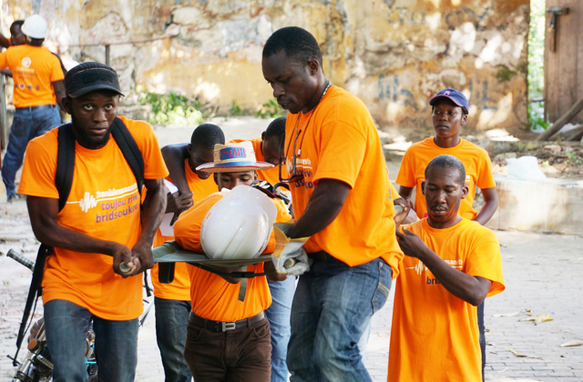
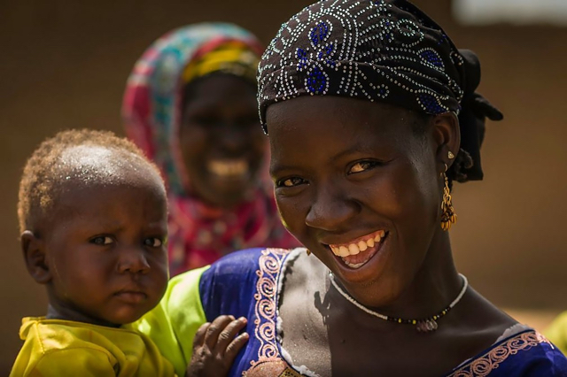
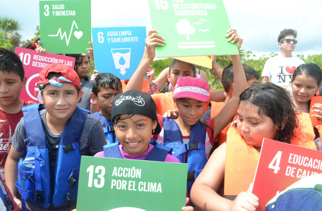
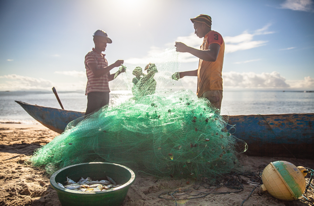
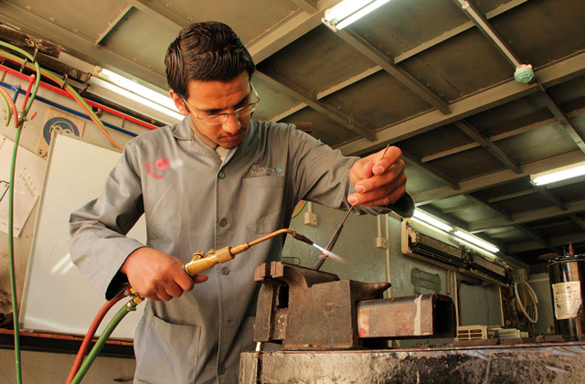

Third UN World Conference on Disaster Risk Reduction
In March 2015, UNDP took part in the Third UN World Conference on Disaster Risk Reduction in Sendai, Japan. At the conference, a new framework for disaster risk reduction was adopted, which identified new ways of cooperating. UNDP helped shape the framework and is guided by it. Every year, UNDP invests hundreds of millions of dollars in helping countries recover from and reduce the risk of disasters. Pictured, disaster response training in Haiti.
Global Events
2015-2016 was a banner year for the world coming together to agree on a vision for a better future and the plans to make it a reality.
UNDP actively participated in several major conferences that brought together world leaders, the UN, civil society, the private sector, and others. These events focused, variously, on climate change, disaster response and preparedness, humanitarianism, and more. Together, they helped steer the world—and UNDP—on its path through the next 15 years and beyond.

HIGHLIGHTS

Sendai, Japan
UNDP

Addis Ababa, Ethiopia
UNDP
Financing for Development
In July 2015, UNDP joined high-level political representatives at the Financing for Development conference in Addis Ababa, Ethiopia. They adopted an international agreement on how to finance the ambitious agenda of the Sustainable Development Goals (SDGs), which were finalized two months later.

New York, USA
UNDP
SDG Summit
In September 2015 in New York, world leaders adopted the 2030 Agenda for Sustainable Development, which includes a set of 17 Sustainable Development Goals to end poverty, fight inequality and injustice, and tackle climate change by 2030. This historic agenda will guide the work of UNDP, a global leader in supporting countries to implement the SDGs. Meanwhile, for the UNDP-cosponsored Social Good Summit, 109 countries held conferences, festivals, and other events to celebrate the Goals. With 50 years of experience in development and a substantive role in coordinating the work of the United Nations at country-level, UNDP is a key partner in supporting countries to reach the Goals. Pictured, schoolchildren in Mexico promoted the Goals while on a field trip to a water resources project.

Paris, France
UNDP
Cop21
At the COP21 conference in Paris in December 2015, 196 countries adopted the first universal and legally binding agreement to curb climate change. In the lead-up to the conference, UNDP helped countries nalize their own commitments to climate action—a vital part of the Paris agreement—and now is helping them fulfil those commitments. UNDP has a climate-change portfolio in more than 140 countries, totalling US$2.3 billion in grant funding, and is working in such areas as reducing greenhouse gases and adapting to the impacts of climate change, as in the project pictured in Madagascar.

Istanbul, Turkey
UNDP
World Humanitarian Summit
Held in Istanbul in May 2016, the World Humanitarian Summit brought together humanitarian and development actors to chart ways to tackle more effectively the growing humanitarian crises around the world. UNDP Administrator Helen Clark emphasized that major efforts must be made to work more effectively across the humanitarian, development, and peace-building spheres. For example, UNDP has a comprehensive response to the Syria crisis, helping communities in Syria and neighbouring countries—such as Jordan, pictured.